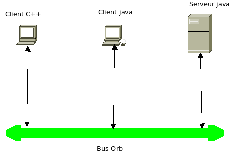
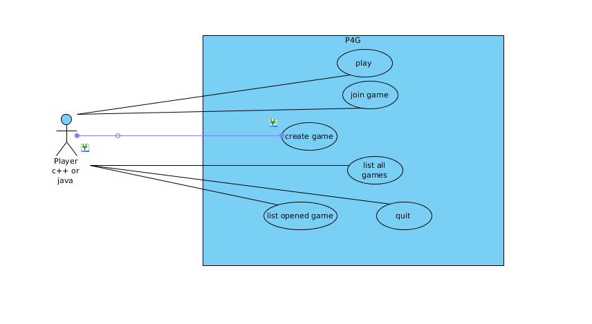

Institut Francophone International
Jeu de puissance 4 réparti
Superviseur : Dr. NGUYEN Hong Quang
Étudiants :
BUI Thi Thanh,
SIDIBE Guéréguin Der Sylvestre,
PHU Ba Duong
Promotion 19 IFI
I.L'introduction
Dans ce travail pratique, nous avons réalisé un petit jeu réparti en utilisant Corba qui on l'appele Jeu de puissance 4 répartie.
Corba est en réalité, une technologie, qui nous permet de construire une application répartie en utilisant plusieurs langages de programmation.
Ce jeu est construit sous le modèle Server/Client. Le Serveur est écrit en utilisant Java(jacORB). Client est écrit en utilisant C++(omniORB) et Java(jacORB).
Ensuite, nous avons testé le fonctionnement du jeu avec plusieur machines.
II.La conception
En effet, une application de Corba est dévelopé sous le modèle Server/Client.
Notre une application Corba est dévelopé sous le modèle Server/Client et une composée de deux parties: une partie serveur dévelopée en langage
java et avec jacORB et une partie cliente mise en place en C++ avec omniORB et en java jacORB.

Architecture globale du système

Diagramme de cas d’utilisation
Le scénario commun du jeu
Au côte du serveur :
1 .Initialiser un GameServer Servant et le mettre sur le NamingService
Au côte du client :
2. Lancer programme du client et obtenir un objet référence GameServer servant
3. Appeller fonctions de création d'un jeu de GameServer servant
Au côte du serveur :
4 .Initialiser un Game Servant et le mettre sur le NamingService
Au côte du client :
5. Obtenir un objet référence Game Servant
6. Un autre client demande au GameServer la liste du jeu disponible
Au côte du serveur :
7. Retourner la liste du jeu disponibles
Au côte du client :
8. Se Connecter à un jeu choisi dans la liste
9. Les deux jeueurs se jouent
L'implémentation
Dans cette implémentation, nous avons utilisé JacORB pour le côté de Java, et omniORB au côté de C++.
Nous sommes arrivé à faire les code server en utilisant jacORB et client en Java et C++.
III. Les problèmes et limitations du programme
Les problèmes
Le jeu n'est pas vraiment testé complètement. Peut-être, il y a des erreurs existant que nous ne sommes pas arrivé à trouver.
Les joueur qui a crée le jeu est tourjour la première personne qui joue. En effet, on a besoin d'une amélioration pour choisi
aléatoirement le joueur qui joue premièrement.
Les limitations
Le fonction "quit" jeu ne fonctionne pas bien. Une fois que le créateur de jeu quite son jeu, ce jeu doit terminer. Si non, une autre joueur
participe à ce jeu pour continuer à jouer avec le rôle de créateur. Cela entrainera des problèmes de conflit de le tour
des deux joueurs.
Cependant, dans le cas, le participant quite son jeu. Le jeu peut continuer à être joué s'il y a un autre joueur qui participe à ce jeu avec
le rôle de deuxième joueur.
IV. Les expériences
- Jouer entre deux clients java
- Jouer entre deux clients c++
- Jouer entre un client java et un client c++
Fondamentallement, le programme a marché suffisamment les fonctions nécessaires comme dans la spécification de fichie P4G.idl
l'objet GameServer peut géré plusieurs jeux à même temps avec les liste IDs mis dans une liste. Les objets des jeux sont les objets
indépendants avec les espace différents.
Les problèmes restants à résoudres sont mentionnés dans la partie de limitations. Nous essayerons de résourdre ces limitations dans queljours
après pour avoir une bonne version du jeu.
V. La conclusion
En travaillant sur ce TP, nous avons bien compris les principes de Corba. Comment peut-on construire une application répartie en
utilisant Corba avec plusieurs langage de programmation. Nous avons aussi trouvé les avantages de Corba par rapport au RMI, programmation de
Socket en fonction de l’implémentation des applications répaties.